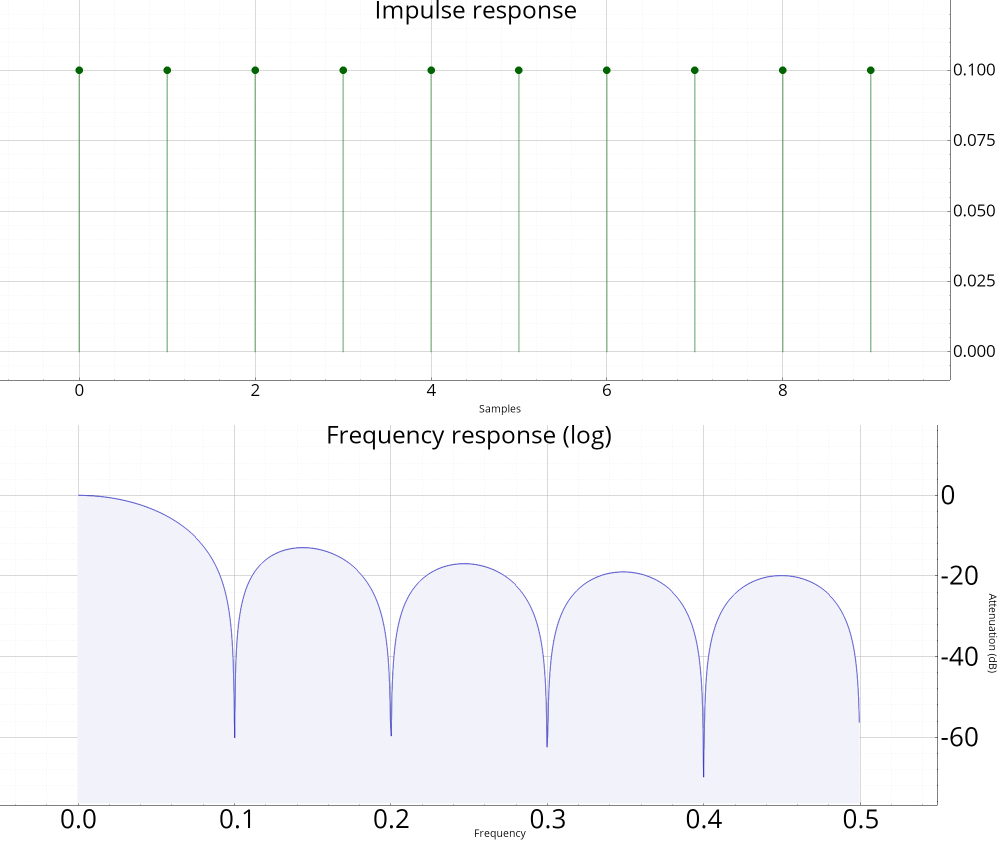

Analyse des filtres linéaires
Ces fonctions ont pour but d'analyser les filtres linéaires (LTI). Voici par exemple quelques courbes qu'il est possible de tracer :

Enumérations
TypeFiltre : PASSE_BAS | PASSE_HAUT | PASSE_BANDE | COUPE_BANDE | AUTRE;
Structures
struct AnalyseFiltre
Résultat de l'analyse d'un filtre linéaire.
Fonctions
void verifie_frequence_normalisee(float f, cstring msg="")
Vérification de la validité d'une fréquence normalisée.
tuple<Vecf, Vecf> frmag(const Design &h, entier npts=1024)
Magnitude d'une filtre RIF ou RII.
Veccf repfreq(const Design &d, const Vecf &fr)
Réponse fréquentielle d'un filtre RIF ou RII.
Vecf repimp(const Design &d, entier npts=-1)
Réponse impulsionnelle.
Vecf repech(const Design &d, entier npts=-1)
Réponse à un échelon.
tuple<Vecf, Vecf> frphase(const Design &h, entier npts=1024)
Phase d'un filtre RIF ou RII.
tuple<Vecf, Vecf> frgroup(const Design &d, entier npts=1024)
Calcul du temps de groupe (délais en fonction de la fréquence).
tsd::vue::Figures tsd::filtrage::plot_filtre(const Design &d, bouléen complet=non, float fe=1.0f)
Analyse d'un filtre linéaire (tracé des différentes réponses).
void plot_plz(Figure fig, const Design &h, bouléen cmap=non)
Tracé des pôles et zéros.
void plot_rimp(Figure f, const Design &d)
Dessine la réponse impulsionnelle d'un filtre.
void plot_rech(Figure f, const Design &d)
Dessine la réponse à un échelon d'un filtre.
void plot_frmag(Figure f, const Design &d, bouléen mode_log=non, float fe=1)
Dessine la réponse fréquentielle (en magnitude) d'un filtre.
void plot_frphase(Figure f, const Design &d, float fe=1)
Dessine la réponse fréquentielle (en phase) d'un filtre.
tuple<Vecf, Vecf> rifamp(const Vecf &h, entier L=1024, bouléen symetrique=oui)
Réponse en amplitude d'un filtre RIF symétrique ou anti-symétrique (phase linéaire).
float rif_delais(entier N)
Calcul du retard d'une filtre RIF à phase linéaire.
AnalyseFiltre analyse_fenêtre(cstring nom, const Vecf &x, bouléen do_plot=oui)
AnalyseFiltre analyse_filtre(const Design &d, bouléen avec_plots)
Analyse d'un filtre linéaire invariant dans le temps (d'après la fonction de transfert).
entier type_rif(const Vecf &h)
Calcule le type (I, II, III ou IV) d'un filtre RIF à phase linéaire. Si les coefficients ne sont pas symétriques ni anti-symétriques, retourne -1.